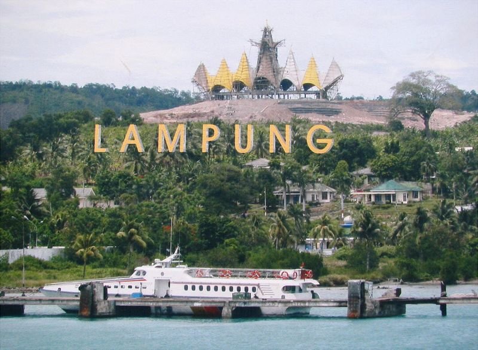

Sejarah
Provinsi Lampung lahir pada tanggal 18 Maret 1964 dengan ditetapkannya Peraturan Pemerintah Nomor 31964 yang kemudian menjadi Undang-undang Nomor 14 tahun 1964. Sebelum itu Provinsi Lampung merupakan Karesidenan yang tergabung dengan Provinsi Sumatera Selatan. Kendatipun Provinsi Lampung sebelum tanggal 18 maret 1964 tersebut secara administratif masih merupakan bagian dari Provinsi Sumatera Selatan, namun daerah ini jauh sebelum Indonesia merdeka memang telah menunjukkan potensi yang sangat besar serta corak warna kebudayaan tersendiri yang dapat menambah khasanah adat budaya di Nusantara yang tercinta ini. Oleh karena itu pada zaman VOC daerah Lampung tidak terlepas dari incaran penjajahan Belanda.